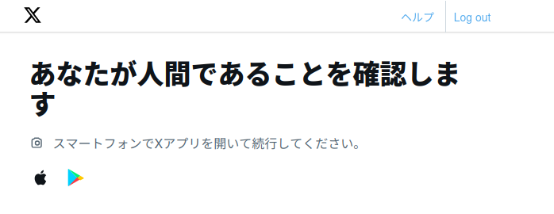

𝕏 に人間と認められなかったので活動を停止します

今回は，このブログの最近の運用についてお知らせかたがた覚え書きを記しておく。
ブログのコミット履歴を圧縮しました
このブログは，github-pages-env リポジトリで作成環境を，spiegel-im-spiegel.github.io リポジトリでデプロイを管理している。Hugo と GitHub Pages を利用。
基本的にブランチは切らずに master ブランチに直接コミットしている。
ひとりで運用してるので，こんなもんだろう。
なにせ10年以上もこの体制で運用しているもんで，コミットログも10年分溜まってしまってるのだ。 まぁ，どれだけログが溜まってようと普段は気にしないのだけど，最近は AI (GitHub Copilot) といっしょに記事やデプロイのチェックを行っていて，ときどきサンドボックス上に clone して動作テストをしたりするの。 その度に10年分のログがダウンロードされるわけで，遅い遅い。
というわけで「昨年までのコミットだけまとめられる？」と AI に訊いたら「できます」と言うのでサンドボックス上でやらせてみたんだけど，塩漬けのネタ用にブランチを切っていた関係でうまく rebase できなかったので，最終的に今年7月までのコミットをまとめることにした。 サンドボックス上で動作テストまでやらせて，最終的な作業手順をシェルスクリプトにまとめてもらった。 あとはスクリプトを実行して作業完了。
コミットをまとめた弊害もあって，このページの右上にもある “History in GitHub Page” で該当ページのコミット履歴を見れるようにしているのだが，今年7月までの履歴がなくなってしまった。 ゴメンペコン 🙇
まぁ，でも，これでリポジトリがスッキリした。
𝕏 に人間と認められなかったので活動を停止します
Firefox のコンテナ機能がなかなか便利で最近よく使っているのだが，これの影響で 𝕏 のサインイン状態が外れちゃったのね。 「しょうがない」とサインインし直したのだが


とか出るの。 「は？」とか思ってコンテナやブラウザを変えて試してみるのだが状況は変わらない。 私は Twitter 時代からスマホに公式アプリを入れてなくて，ブラウザからしかアクセスしていない。 なので「スマートフォンでXアプリを開いて続行」とか言われても「知らんがな」となる。
あとで調べて知ったのだが，最近の 𝕏 ってユーザが「人間」であることを確認できないとサインインできなくなってるんだって？ ググったら，これのせいで iOS なんかが困らされてるという記事が挙がっていた。
試しに手持ちの Android タブレットに一時的にアプリを入れてサインインしてみようとしたのだが（スマホに入れるのはどうしても嫌）

とか表示が出て生体認証を要求するの。 なんだそれ？ もういいや！ 金払ってるわけじゃないし，サインインしなくても（自 TL が見れないだけで）推し VTuber とかのポストは見れるし，ゲーム情報は Discord でも見れるので実害はない（多分）。
というわけで 𝕏 上での活動を完全停止します。 サインインできないから退会すらできないョ。 まぁ，そのうち勝手に BAN されるかもしれんけど（笑） ホンマどこまで粘着質なんだか。